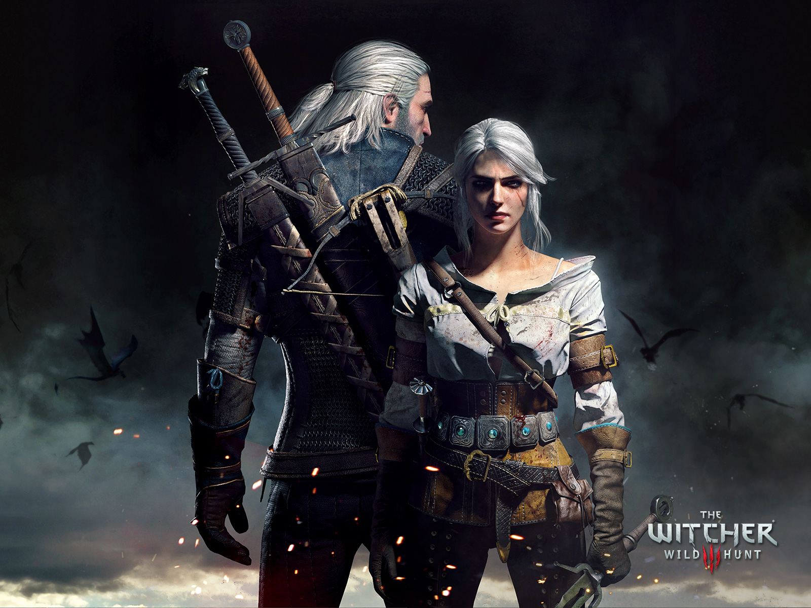
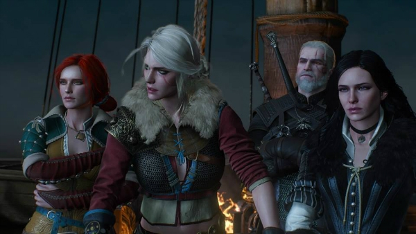
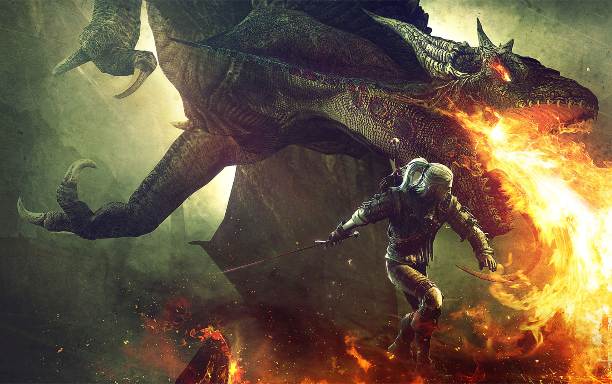
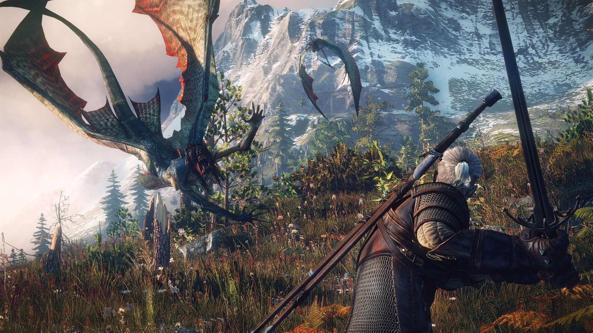
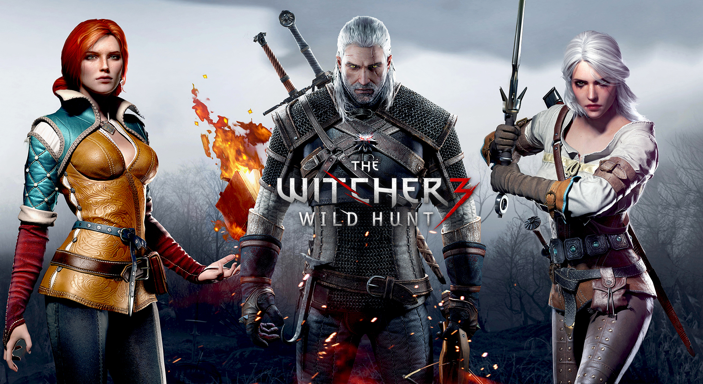
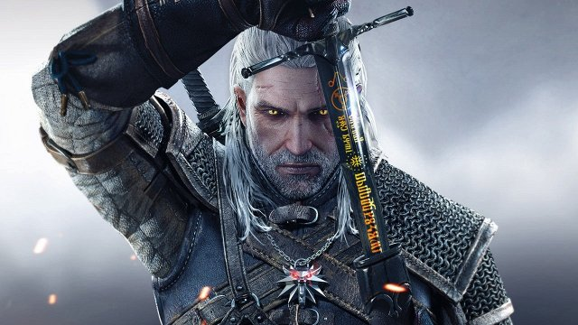

História
Introdução
"The Witcher 3: Wild Hunt" é um RPG tipicamente ocidental, onde você encarna um herói misterioso e embarca em uma série de missões enquanto explora um vasto mundo de fantasia. Como nos melhores jogos do gênero, não há uma divisão clara entre bem e mal - isso fica nas mãos do jogador, que decide o rumo das coisas em cada situação.
No game você é Geralt de Rívia, um bruxo - um caçador de monstros geneticamente modificado, na mitologia criada pelo escritor Andrzej Sapkowski. Criado para caçar monstros, Geralt vaga pelo mundo salvando as pessoas comuns de criaturas sinistras, desde que seja devidamente pago para isso.
Em “Wild Hunt”, o bruxo está em uma busca pessoal pelas mulheres de seu passado. Nos jogos anteriores (o primeiro saiu só para PC, o segundo para PC e Xbox 360), o herói passou por maus bocados, perdeu a memória e se envolveu em guerras e politicagens nas cortes reais. Agora, Geralt tem sua memória de volta e nenhum vínculo com reis ou outros empregadores poderosos. O personagem parte em um novo começo para sua vida - momento ideal para introduzir novos jogadores ao bruxo e suas aventuras.

História
O mundo em caos. O ar é espesso com tensão e fumaça dos vilarejos queimados. O temível Império de Nilfgaard atacou novamente, devastando os desafortunados do Reino do Norte. O outrora poderoso que tentou usar Geralt para seu próprio benefício agora se foi. Em tempos incertos, ninguém pode dizer o que o futuro guarda, quem irá trazer a paz para o mundo e quem irá causar só a miséria.
Mas uma força das trevas e mortal emerge. Homens pequenos e mulheres comandando exércitos despreparados não conseguem entender que esse conflito é jogo de criança comparado à Caçada Selvagem, a ameaça do outro mundo agora se aproxima. Esses cavaleiros espectrais amaldiçoam o mundo há anos, afundando-o em miséria e desespero. Mas nesse momento, a Caçada Selvagem procura uma pessoa em particular: aquele que concedeu Geralt ao Destino, a única alma que Geralt considera parentesco.

Não-linear, feito à mão
O terceiro jogo possuirá mais de 100 horas de jogabilidade não-linear, que é uma característica fundamental do jogo, sendo que aproximadamente metade faz parte da história principal, uma narrativa que foca em Geralt e aqueles próximos a si. Com as escolhas do jogador ramificando as aventuras da história principal em vários níveis, desde as sub-histórias inteiras, às questões cotidianas triviais. Salvando um filho do moleiro de um ataque de um wyvern pode afetar quem acabará por vestir uma coroa, enquanto frustrar uma conspiração para assassinar um senhor nobre poderia significar a ruína de seus súditos oprimidos.
Nenhuma das missões –principais ou secundárias — são aleatórias. Cada uma delas foi feita à mão com meticulosidade para encaixar no vibrante universo do jogo.
As escolhas do jogador definirão os resultados da última aventura de Geralt, sejam nas histórias secundárias, eventos triviais do dia-a-dia ou decidindo o destino de todo um reino. Missões poderão ser escolhidas em qualquer ordem, completadas uma de cada vez ou várias em paralelo. Seja quais as ações que o jogador tomar, elas culminarão em três epílogos completamente jogáveis, que passarão em um dos doze finais possíveis. No total, serão 36 finais diferentes.
Missões podem ser tomadas em qualquer ordem, completando uma de cada vez ou prosseguindo em paralelo com os outros. Independentemente do método, as ações do jogador trarão muitas consequências que podem mudar a história e afetam o mundo do jogo. Essas consequências culminam em três epílogos jogáveis completamente diferentes definidos em um dos doze estados possíveis de um único mundo. Definido pelo resultado de eventos climáticos e o destino das principais NPCs, esses estados fornecem um total de 36 finais diferentes.
Escolha e consequência
O conceito de escolha e consequência é algo que foi muito estudado pela CD Projekt Red, para evoluir não só seus jogos da saga The Witcher, como todo o gênero de jogos de RPG. O núcleo de filosofia de RPG da CD Projekt RED, este conceito foi a espinha dorsal de The Witcher 1 e 2. Naturalmente, escolha um lugar de destaque na história, assim como todas as mecânicas de jogo, de The Witcher 3. O conceito principal fará o jogador não procurar por escolhas simplesmente boas ou más, já que a maioria delas culminará na escolha do menor dos males.
Um exemplo: você ajudaria um político a prender toda uma vila de elfos que, segundo ele, estão trabalhando para os rebeldes violentos dos Scoia’tael, ou você o impedirá, correndo o risco de permitir que estrangeiros derrubem os portões e bandidos matem todos os humanos na cidade? Tais escolhas difíceis são complementadas pela interatividade dos diálogos, permitindo que os jogadores escolham como falar com outros personagens, moldando seus relacionamentos, determinando assim como NPCs irão tratá-lo em troca.
Cada ação tem impacto na história e no mundo do jogo. NPCs, comunidades, monstros e locais mudam de acordo com a escolha do jogador - você pode livrar uma vila de pescadores dos Drowners e assistir a sua economia prosperar, ou matar um comerciante em uma cidade e ver seus parceiros comerciais irem à falência por falta de mercadorias.
Uma vez que a escolha é feita não se pode mudar, seus efeitos podem ser tanto imediatos como diferidos. Revisitar um local onde uma importante conjuntura da história foi jogada fora, e você encontrará transformado por suas ações anteriores. Da mesma forma, uma escolha feita em um canto do mundo, pertencentes a personagens específicos, bem poderia produzir consequências em outras terras, entre outras populações.

Um continente a descobrir
O mundo de The Witcher 3 é vasto e contínuo, porém diverso, com cada uma de suas terras inspiradas por diferentes referências e fontes culturais.
Terra de Ninguém: um território de guerra, esparsamente populoso, baseado na mitologia eslava. Pântanos e florestas sombrias e primevas, onde monstros espreitam atrás de cada árvore e ninguém que passa por lá sabe se verá outra aurora. Um lugar de anarquia, onde a força dá poder e o ouro compra vidas.
Skellige: um arquipélago baseado nas lendas e sagas nórdicas e celtas. Nestas ilhas, habitadas por pessoas orgulhosas e nobres, os guerreiros buscam fama ao enfrentar monstros lendários, os druidas guardam os segredos da natureza e os bardos cantam sobre heróis antigos em salões iluminados por tochas. Teimosamente independentes, os skelliganos preparam seus barcos longos e afiam suas lanças, prontos para entregar suas vidas em defesa contra a inevitável invasão Nilfgaardiana.
Novigrad e seus arredores: uma cidade portuária baseada na Amsterdã medieval. Nesta grande cidade, tão colorida e rica quanto corrupta, jogadores testemunharão a perseguição a magos por um poderoso culto, enquanto terão de lidar com figuras do submundo prontas para lucrar com a iminente guerra mundial.

Pontos positivos
Narrativa e liberdade
A maior conquista de “The Witcher 3” não é o belo mundo virtual construído pela CD Projekt e nem as centenas de horas de entretenimento que o jogo oferece, mas sim o equilíbrio perfeito entre narrativa forte e liberdade de ação - duas filosofias de design de RPGs que até então eram opostos extremos.
A narrativa sempre foi o forte de “The Witcher”, dada a origem literária da série. Os jogos anteriores traziam sempre histórias envolventes e divididas em capítulos, em uma estrutura rígida e tradicional. Já a liberdade de ação e exploração é novidade para a franquia polonesa, inspirada sem dúvida nos sistemas de escolhas de “Dragon Age” e no mundo aberto de “Skyrim”.
“The Witcher 3” tem heróis bem caracterizados e um roteiro bem definido ao mesmo tempo em que oferece ao jogador a ilusão da escolha e a liberdade de explorar o mundo da maneira que quiser, cumprindo contratos e missões na ordem que preferir - sem que nenhum desses elementos seja prejudicado pelos demais.
As longas missões principais são divididas em etapas, tornando a experiência mais didática para os recém-chegados ao gênero ao mesmo tempo em que desenvolve a história em um ritmo envolvente, recompensando o jogador com novas informações e equipamentos que abrem ainda mais possibilidades para explorar as florestas e ilhas do jogo.
Cada missão que o jogador encontra é roteirizada, por mais secundária que seja. Ao caçar um fantasma que assombra um vilarejo de beira de estrada, você vai usar mecânicas de jogo variadas (conversar, rastrear pistas, lutar, preparar poções e por aí vai) para alcançar o objetivo. Ao longo do game, você nunca vai se ver diante de tarefas como “mate 20 lobos” e mesmo objetivos simples como “mate a aparição que assombra a vila” raramente serão exatamente isso. No processo você vai descobrir que o fantasma é a verdadeira vítima, uma mulher morta pelo marido ciumento. Ou que se trata de um vigarista enganando os camponeses.
E sim, você vai caçar monstros enormes e fantásticos, como grifos e outras criaturas bem mais assustadoras. As histórias dessas criaturas costuram elementos de contos de fada e mitologia nórdica com verdadeiras tramas de horror - como o caso do fetulho, criança abortada que volta do túmulo para se vingar pelo abandono… e que pode ter a maldição encerrada após receber um abraço do pai.
Nessas missões, você pode optar pelo caminho mais fácil, ignorando as motivações e mentiras e se concentrando na tarefa (matar o monstro e receber o pagamento) ou se envolver, tentando convencer o pai a aceitar a criatura morta-viva como seu filho, por exemplo, ou levar a vingança do fantasma ao marido assassino.
“The Witcher 3” conta com centenas de pequenas histórias assim, material o bastante para desviar a atenção do jogador para sempre do objetivo principal, se a CD Projekt não conseguisse amarrar eventos menores com os acontecimentos mais importantes, posicionando missões principais (ou trechos delas) no meio do caminho do jogador. É a ilusão de escolha funcionando a favor do game, sem diminuir a participação e a diversão do jogador.

Mecânicas de ação
"The Witcher 3: Wild Hunt" tem controles bem melhores do que os jogos anteriores da série, principalmente durante as sequências de combate. As lutas estão mais prazerosas e divertidas do que nunca, com direito a combos acrobáticos e golpes críticos sanguinários (decepar cabeças, perfurar corações e fatiar inimigos ao meio são alguns exemplos).
O novo menu de magias e itens especiais (que inclui bombas, besta e outras bugigangas coletadas ao longo da aventura) permite acessar e trocar os sinais (as magias de Geralt) rapidamente durante a luta, o que na prática significa mais versatilidade para o jogador. Invoque um escudo ao redor do personagem, mude para uma armadilha mágica para aprisionar o monstro e depois queime a criatura com uma magia de fogo, tudo isso enquanto golpeia com a espada e rola para escapar das investidas do inimigo
Você é um bruxo e já começa o jogo com todas essas magias, entre outras. Claro, conforme progride na aventura e ganha experiência, pode aprimorar habilidades e ativar certas vantagens que deixarão Geralt ainda mais "apelão". Uma das coisas bacanas é que mesmo que você compre pontos em todas as habilidades, só poderá equipar ativamente algumas delas, pois há um espaço limitado para as perícias e vantagens do personagem. Pena que o inventário do bruxo não é tão simples de usar e organizar como o menu das magias - facilitaria muito a vida na hora de comparar equipamentos ou verificar os estoques de alguns itens.
Geralt ainda se movimenta de um jeito esquisito, como um tanque de guerra bizarramente leve. Para quem está chegando agora, se acostumar com a movimentação do bruxo leva um tempo e não vai agradar a todos, mas quem veio dos "Witcher" anteriores sabe o quanto a CD Projekt progrediu desde que adaptou "Assassin of Kings" para Xbox 360.

Personagens complexos
Um dos elementos mais bacanas de "The Witcher 3" é a complexidade dos personagens com quem você lida no jogo. Desde o próprio Geralt até as Normas do Pântano, a bela Yennefer e a ex-namorada Triss, passando por figuras como o Barão Sanguinário e Emhyr, o Imperador de Nilfgaard, cada personagem tem uma longa história pessoal, motivações e acredite, nada é exatamente o que parece.
Conforme joga e se aventura com (ou para) estes personagens, você vai conversando, vendo coisas e descobrindo mais detalhes sobre cada personagem. Opiniões mudam ao longo do game, raramente por alguma informação escrita no caprichado glossário incluso no jogo, mas sim após presenciar ou até perpetrar certas ações para os companheiros. Personagens que são totalmente secundários, como a camponesa que mantém o amor não correspondido aprisionado em uma caverna, acabam se revelando complexos e cheios de nuances.
A história de Ciri é o melhor exemplo da maestria da CD Projekt em apresentar tramas e desenvolver personagens. Ao ouvir uma história envolvendo Ciri, a misteriosa criança da profecia que Geralt adotou como protegida, o jogador é levado para um longo ‘flashback’ jogável, onde controla a moça - que tem movimentos bem diferentes do protagonista, além de ser um personagem complexo e interessante, forte candidata à favorita dos fãs.
Em cada novo 'flashback', você vai conhecendo e se importando mais com a personagem., estabelecendo um vínculo que só é possível ao colocar o controle de Ciri nas mãos do jogador. Assim, quando o destino dela está em jogo, você se importa com a menina, pois não é só um personagem de quem você ouviu falar, mas alguém que você controlou em outros momentos do jogo, é "parte da família".
Dublagem brasileira
"The Witcher 3" não tem atores famosos ou cantores pop no elenco, mas as vozes do time de dublagem brasileiro são familiares. Sergio Moreno (que além de vários personagens de jogos da Ubisoft, já emprestou a voz para as versões brasileiras de Tom Cruise e Orlando Bloom, entre outros. Orlando Drummond (Sir Percival em "The Order" e a voz de dezenas de personagens dos desenhos animados, como Patolino, Frajola, Scooby Doo e o Gato Guerreiro, por exemplo) é outro veterano que marca presença, na voz do bruxo Vesemir.
As vozes brasileiras dos personagens principais, como Yennefer, Ciri, o Barão Sanguinário e outros tantos são muito bem trabalhadas e mesmo que diferentes das vozes originais, convencem o jogador. Ainda que com pequenos deslizes, a localização de "The Witcher 3" está entre as melhores já feitas no Brasil.
E, caso você prefira apreciar a interpretação original do game, (que tem o ator Charles Dance, de "Game of Thrones", entre os atores), "The Witcher 3" permite que você seleciona o idioma do áudio e das legendas e menus separadamente, dentro do game - funcionalidade que estranhamente está ausente em boa parte dos games mais recentes.
Pontos Negativos
Controle do cavalo
Controlar Geralt em "The Witcher 3" é uma atividade muito melhor do que nos jogos anteriores, mas não se compara com heróis de jogos de ação, como Drake ("Uncharted") ou Dante ("Devil May Cry"). Até aí, não é esse o objetivo da CD Projekt, então tudo bem. O personagem é mais ágil e versátil do que o Arauto de Andraste (de "Dragon Age: Inquisition") ou o Dragonborn de "Skyrim" e depois de um tempo, você pega o jeito nos controles do bruxo.
Porém, o mesmo não pode ser dito do cavalo. Conduzir o cavalo Carpeado pelas estradas do game é até tranquilo, mas basta subir em um barranco ou dar de cara com algumas arvorezinhas para as coisas se complicarem. Virar o animal, dar a volta em algo... é quase como guiar um tanque de guerra: impreciso nos melhores momentos, irritante nos piores.

Falhas na localização
A localização de "The Witcher 3: Wild Hunt" é um dos maiores trabalhos já feitos nesse sentido no Brasil, tanto na dublagem quanto nas milhares de páginas de texto. São livros, cartazes, menus, itens, cartas de baralho e linhas de diálogo.
Apesar do excelente trabalho, há deslizes aqui e ali. Sejam termos que ficaram sem tradução, como "seda" que aparece listado como "[ENG] Silk" no inventário, ou a ocasional legenda que é diferente da fala dita na cena, as falhas estão lá, infelizmente.
O pior caso mesmo é o de personagens secundários que tem as vozes bagunçadas: crianças em geral tem vozes mais agudas do que o necessário e não há como não notar um certo ferreiro anão que além de não ter o sotaque escocês característico na versão brasileira, tem uma determinada voz enquanto Geralt cumpre uma missão para ele. Depois da missão, a voz do anão muda no mesmo instante, como se fosse outra pessoa.
São falhas menores, diante do tamanho da obra, mas que atrapalham um pouco a imersão de quem optar por jogar em português.